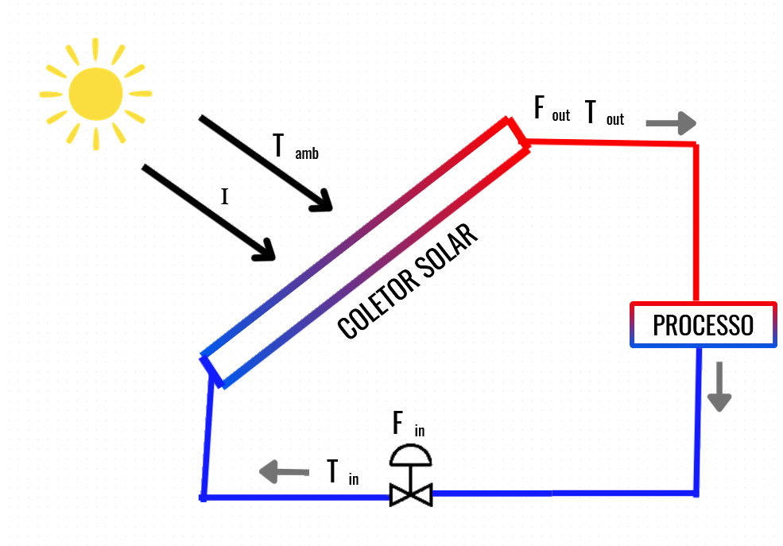

Plataforma de simulação do comportamento térmico de um coletor solar com controle de vazão
Interface desenvolvida para análise dinâmica da temperatura do coletor, influência da irradiância solar, temperatura ambiente, temperatura de entrada do fluido e atuação de um controlador PID sobre a vazão.
Desenvolvimento Davi de Lima Rosa
Supervisão Marcus V. Americano da Costa
Modelo matemático da simulação
A dinâmica principal do coletor utiliza a Equação (11), com temperatura de entrada simplificada para representar rotatividade do fluido.
Controle da execução
Ajuste parâmetros, inicie a simulação e reconfigure as constantes do coletor conforme o cenário de estudo.

Modo temporal
Escolha entre operação contínua em tempo real ou varredura rápida em tempo simulado.
Entradas do processo
Defina as perturbações externas e as condições iniciais do sistema térmico.
A temperatura de entrada \(T_{in}\) é tratada de forma simplificada para gerar comportamento mais rotativo, sem efeito dominante de acúmulo.
Controlador PID
Ajuste a referência térmica e os ganhos de atuação do controlador.
Perfil temporal por CSV
Importe perfis de irradiância e temperatura ambiente no modo simulado.
Formato esperado: HH:MM, irradiacao, temperatura
Exemplo: 12:30, 750, 26.5
Indicadores operacionais
Resumo das principais variáveis térmicas e de controle do sistema.
—
—
—
—
—
Temperaturas do sistema
Comparação entre entrada, saída, coletor e referência.
Vazão relativa
Atuação do controlador sobre a vazão nominal.
Potências térmicas
Ganho solar, perdas térmicas e potência útil do fluido.
Erro de controle
Diferença entre a temperatura de saída e a referência do controlador.
Perfil de irradiância e temperatura ambiente
Visualização simultânea das perturbações externas do sistema.